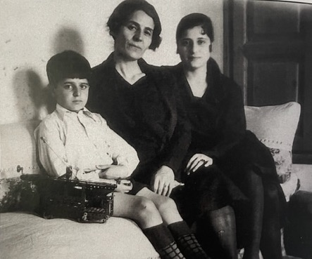

An introduction
About this project: Hovsep Aghek Yeni-Komshian was born April 2, 1895 in Kilis, Anatolia, Ottoman Empire to an Armenian family. Before WWI, 2.5 million Armenians lived in Anatolia, their historic homeland for thousands of years (now Eastern-Turkey).
After the Armenian Genocide, 98% of those Armenians had either been killed or deported, with an estimated 1.5 million murdered. Those who did survive escaped to Syria, Lebanon, and beyond,
creating a scattered diaspora. After escaping Ottoman Turkey, Hovsep spent the majority of his adult life in Beirut, Lebanon, where he met his wife Helen, raised five children, and practiced medicine for 42 years until the outbreak of the Lebanese Civil War, which forced him to re-locate, once again, to the United States at the age of 84.
In 1983, shortly after arriving in the US, Hovsep, with the support of his daughters, recorded an account of his life resulting in 50+ pages of a transcribed oral history.
This project attempts to visualize Hovep's oral history, alongside photos from family albums and recent travels to Lebanon and Eastern Turkey to visit some of the places mentioned. In doing so, this project aims to explore Hovsep's life through his learnings, loves and losses. In the first part, data visualization and analysis with the support of Python's NLTK library are used to understand the top themes and sentiments of Hovsep's life. In the second part, an abridged version Hovsep's oral history is presented through a visual narrative, in his own words.
Sentiment over time
To analyze Hovsep's thoughts and emotions by time and place, the oral history transcript was converted into a tabular data set with each thought associated with a time and place. This was then analyzed in Python using the The NRCLexicon library for emotion classification, which predicts the sentiments and emotion of a given text based on a library of 27,000 words. The resultant sentiment score represents the 'intensity' or 'frequency' of an emotion in the text, with a polarity scale of 0-1. For example, if a text contains many words associated with 'joy', its joy score will be higher. For overall sentiment, the average between positive and negative sentiment was calculated for each year, with a higher score indicating more positive sentiment.
Life in technicolor: emotions, by decade and country
The stacked area chart on the left shows both the predominant emotions detected from Hovsep's oral history overall, and how those changed throughout his life. For example, trust, anticipation, and joy had the strongest intensity in their scores, whereas emotions like anger and disgust remained relatively low throughout Hovsep's life.
The categorical heat map on the right visualizes how Hovsep's felt about each of the countries where he spent significant time. The intensity of the scores overall are low, so the visualization creates a relative comparison of the intensity of emotion for each country, with brighter colors signifying a stronger score for that emotion compared to the other countries on the list. For example, there is the highest anger and fear associated with Turkey relative to other countries. Trust was relatively higher for Syria, where Hovsep's family initially fled to for safety in Aleppo.
Life by parts of speech
Decline of Ottoman Empire, turn of 20th century
The beginning of deportation
Until 1914 things remained peaceful, but WWI began and that era came to an end. When Turkey became the ally of the Central Powers, periodic massacres and persecutions culminated in an organized plan for mass deportation and extermination of the Armenians living in Asia Minor.
One day an order came that all Christian landowners were to be deprived of their lands and made refugees. At the time orders were received to deport the Armenian community from Kilis, my father’s house and storerooms were brim full of wheat, olives, olive oil, preserves of all kind and fruits of the harvest. Fortunately, my father had the foresight to retain part of his assets in gold.
The lands were taken and the sons were also taken. My uncle was inconsolably grief-stricken when three of his sons were murdered by the Turks in one day. My father had no alternative but to hand over the keys to his home, store rooms and properties to the local authorities.
My parents were forced to leave their home in Kilis and were deported to Aleppo.
One million two hundred thousand Armenians were lost in the genocide.
passed down to Hovsep's descendants
from the area of Aintab and Marash (including Kilis).
Source: Armenian National Institute.
Settling in Beirut, Lebanon
We rented a small house on Rue Jeanne D'Arc, in the middle of mulberry groves. My father decided to move the family to Beirut. He returned to Aleppo and sent for the other members of the family to come to Beirut by rail. He accompanied the horse (who saved the family from deportation) to Alexandretta, which was part of Syria at that time. They both arrived in Beirut by sea.
By this time, we had moved to a larger house on Rue Bliss which also had a garden and a small stable. And one of the gratifications that I have in life that my father and mother for this to the end of their days and they finished their days under their own roof.
Finding love & family

I had my own difficulties, but I was looking around 1925-1926 for a companion in life, but years would go by and nothing would come that would in any way click. Certainly, I had made a few attempts, some of them almost to the conclusion, but it was not quite the right thing until one day in February of 1929.
I was called to see an Armenian patient from Aintab who was a friend of my father, and had come from London with his family en route to Aleppo. He needed care, he was gravely ill. When I entered the room, beside the sick man there was a beautiful woman with curly hair coming down to her dress, she was the daughter.
When I saw Helen for the first time, Ah! Ah! My heart jumped; she was the person I was looking for years and years.
Although I had been searching for a wife for 5-6 years, it did not take more than six days to be engaged to Helen and to put on her finger. At the time of our engagement, Helen and I pledged to each other that we would face the music together and we promised to face whatever life had in store for us through thick and thin.
We were married on February 23, 1930 in Saint Nishan Church, Beirut. Thank God we have had a full life together and were blessed with five healthy children. Our married life has been based on mutual understanding, mutual trust, mutual confidence and mutual sharing.
A life in medicine, teaching & community work
From my earliest childhood, I wanted to become a physician. I was granted a life of study and teaching. I started as a Professor of Medicine at the AUB Department for Internal Medicine – where I spent 42 years, alongside visiting professorships in New Orleans and London.
My relation with my students have been a great satisfaction in my life. At first they are raw material, some of them seem to know almost everything that is known in medicine, but gradually, they realize that there are lots of problems in medicine even their teacher does not know. So I have never looked on any of my students as someone in anyway inferior to me. A number of students, who have come in contact with me now, they are specialists and they call me “maalmi,” my teacher. It is really a joy to meet them, to talk to them and feel that you have had a part in their growth.
Now I believe there are things in being a physician that brings a man close to his fellow man more than any other profession. Science and technology are very important but that is not all; with it there is an art of how to reach people in their distress and how to have compassion for people. I feel that mind and body are complementary; they are not two distinct things. As a physician you have got to take into your consideration the personality of the patient and give your treatment accordingly.
The Armenian population in Lebanon expanded when survivors of the Armenian Genocide arrived in the 1915 aftermath. They lived in makeshift camps by the Beirut River, enduring squalid conditions without proper sanitation, water, or electricity. Disease was rampant, especially tuberculosis. [But] the existing sanitoriums in Lebanon were full and couldn’t take any more patients. This experience ignited my determination to establish the Armenian National Sanatorium in Azounieh for tuberculosis patients. While tuberculosis is now less prevalent, the sanatorium serves various purposes, including care for the elderly and destitute, benefiting not just Armenians but all of Lebanon and surrounding Arab countries.
members of the first board of trustees
of the Azounieh Sanatorium, 1923